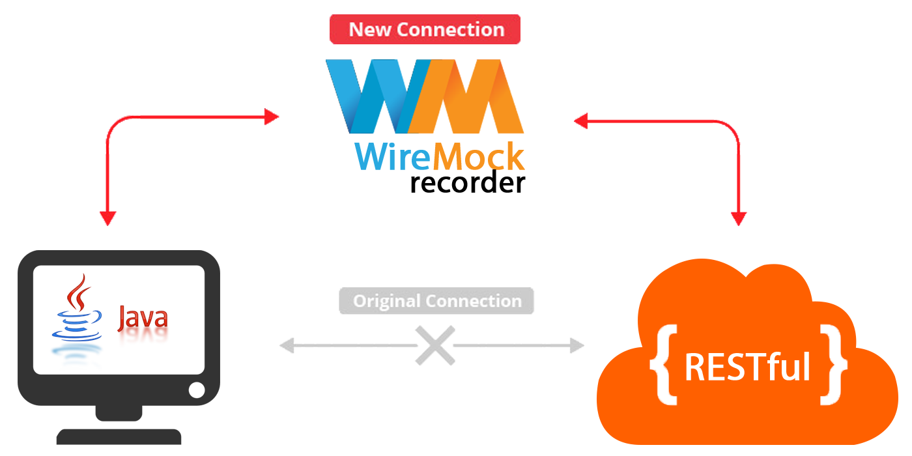

Wiremock
Chapter I: The Basics
WireMock is a library for stubbing and mocking web services. It constructs an HTTP server that we could connect to as we would to an actual web service.
com.github.tomakehurst
wiremock
${wiremock.latest}
test
- Simulator/MockServer for HTTP-based APIs
- Stay productive when an API you depend on doesn't exist
- Testing of edge cases and failures that the real API won't reliably produce
Flexible Deployment
Run WireMock from within a
- Java Application
- JUnit Test
- Servlet Container
- Standalone Process
Powerful Request Matching
Matches…
- Request URLs
- Methods
- Headers
- Cookies
- Bodies
…using a wide variety of strategies.
First class support for JSON and XML.
Record and Playback
Get up and running quickly by capturing traffic to and from an existing API.
Ok, Leonidas ! Let's have a look…
Components of shown Example
@Test
public void testPositive() {
//arrange
stubFor(get(urlEqualTo("/game/info/difficulty"))
.willReturn(aResponse()
.withStatus(HttpStatus.SC_OK)
.withHeader(HttpHeaders.CONTENT_TYPE, MediaType.TEXT_PLAIN)
.withBody(Difficulty.OVER9000.name())));
//act
Response result = restResourceUnderTest.loadCurrentDifficulty();
//assert
assertThat(result.getStatus()).isEqualTo(HttpStatus.SC_OK);
assertThat(result.readEntity(String.class)).contains("OVER9000");
…
}| Arrange | Setup your REST-Service implementation simulated by Wiremock. |
| Act | REST-Client calls simulated Service implementation. |
| Assert | Do your assertions for call meta-information, data-integrity, etc. |
Delays
stubFor(get(urlEqualTo("/delayed")).willReturn(
aResponse()
.withStatus(200)
.withFixedDelay(2000)));Delays can be configured as follows:
| .withFixedDelay() | all responses are delayed by x milliseconds |
| .withUniformRandomDelay() | all responses are delayed randomly using a uniform distribution |
| .withLogNormalRandomDelay() | all responses are delayed randomly using a log-normal distribution |
Bad responses
stubFor(get(urlEqualTo("/fault"))
.willReturn(aResponse()
.withFault(Fault.MALFORMED_RESPONSE_CHUNK)));The Fault.java enum has the following options:
| EMPTY_RESPONSE | Returns a completely empty response. |
| RANDOM_DATA_THEN_CLOSE | Sends random data, then closes the connection. |
| MALFORMED_RESPONSE_CHUNK | Sends an OK (200) status header, then garbage 💩, then closes the connection. |
keytool -genkey -keyalg RSA -alias selfsigned -keystore keystore.jks -storepass password -validity 360 -keysize 2048-
What is your first and last name ?
- Common Name (CN) -> localhost
-
What is the name of your organizational unit ?
- Organizational Unit (OU) -> …
-
What is the name of your organization ?
- Organization (O) -> …
-
What is the name of your City or Locality ?
- Locality (L) -> …
-
What is the name of your State or Province ?
- State (ST) -> …
-
What is the two-letter country code for this unit ?
- Country (C) -> DE
@Rule
public WireMockRule wireMock = new WireMockRule(wireMockConfig()
.dynamicHttpsPort()
.keystorePath("src/test/resources/wiremock.jks")
.keystorePassword("password"));
private static final String BASE_URL = "https://localhost:";To use SSL during testing the WireMockRule needs a config with:
| .dynamicHttpsPort() | Configures WireMock to allocate an https port. |
| .keystorePath() | The path to the keystore that stores your certificate |
| .keystorePassword() | Your companies intranet password 🙈 |
There's even more!
Chapter II - Advanced Testing
| Request-Matching | How to build a better stub |
| JSON/XML Data Bodies | Work with more complex bodies |
| Verification | Verify correct behaviour of your code |
Do you have any…
Fin